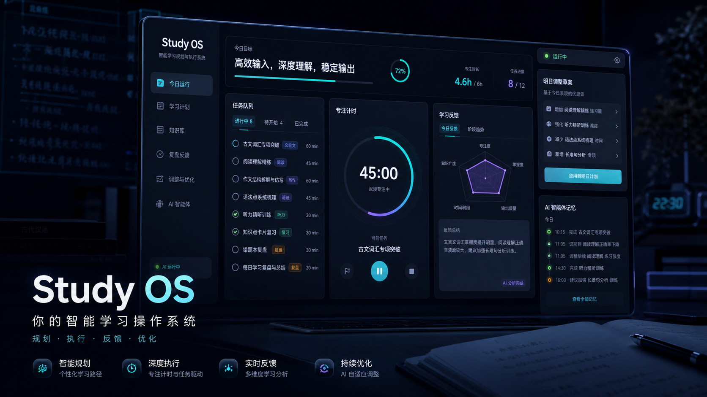

想解决什么问题？
很多学生、自学者和备考用户都会制定学习计划，但真正执行时，经常不知道今天该学什么、学多久、没完成的内容明天怎么补。计划写得越完整，后续维护成本反而越高，最后容易变成一份很快过期的表格。
Study OS 想解决的不是“帮用户生成一段建议”，而是把长期目标拆成 月度目标、周目标、今日任务、学习反馈、明日调整，并让 AI 的每一次写库都经过用户确认。
这个想法来自长期备考、自学编程和多目标学习管理场景：真正困难的不是第一天立目标，而是第十天、第三十天还能知道自己该继续做什么。
它大概是什么产品？
Study OS 是一个 Web 学习管理系统，核心页面分为 AI 目标打磨页和每日学习计划页。AI 负责生成计划草稿、日报草稿和调整草稿，用户确认后才写入正式目标、任务或学习记录。
每天打开后，用户看到什么？
面向哪些用户？
备考学生
考研、四六级、期末考试、资格证备考用户，需要把长期目标拆成每天能执行的学习任务。
自学编程者
学习路线长、知识点多，容易出现“收藏很多课程，但不知道今天该练什么”的问题。
多目标学习者
同时推进课程、考试、项目和刷题时，需要一个统一入口聚合今日任务，而不是在多个计划之间来回切换。
没有 Study OS 会怎样？
计划容易过期
用户第一天生成的计划很完整，但现实学习进度变化后，后续安排很快失真。
反馈无法落地
“今天没学完”“太难了”“时间不够”如果只写在日志里，就不会真正改变明天的任务。
AI 缺少边界
如果 AI 可以直接改目标和任务，就可能误改正式数据；如果只能聊天，又很难进入真实工作流。
为什么它不只是一个想法？
当前项目已经推进到第 10 阶段封存，形成了从计划草稿、确认写库、每日执行到反馈调整的闭环。
为什么值得做？
效率提升：用户不需要每天重新规划，只要打开每日计划页，就能看到今日任务、预计时长、当前最重要任务、专注计时和明日调整建议。
商业价值：Study OS 可以拓展为个人学习陪跑工具、考研考证备考系统、训练营学习管理工具或学校学习平台，适合长期订阅和持续服务。
安全边界：AI 不直接接管数据库，而是先生成草稿，再由用户确认写入。这样既能利用 AI 的规划能力，又能避免误改学习目标和正式任务。
可直接复制的社区版本
标题与标签
【学习工作赛道】Study OS 智能学习规划跟踪师 标签：学习工作
正文
1. 创意名称 + 创意介绍 创意名称：Study OS 智能学习规划跟踪师。 我想解决的问题是：很多学生、自学者和备考用户都会制定学习计划，但真正执行时经常不知道今天该学什么、学多久、学完后明天怎么调整，计划很容易停留在纸面上。这个创意来自长期备考和自学场景：用户需要的不是一次性 AI 建议，而是一个能持续陪跑、能把目标拆成每日行动的学习操作系统。 它是一个 Web 学习管理系统，包含 AI 目标打磨、阶段目标拆解、每日计划、学习计时、反馈输入、次日计划调整和确认式写库闭环。 2. 目标用户及痛点 核心用户包括备考学生、大学生、自学编程者、考证用户，以及需要长期学习目标管理的人。用户会在制定学习目标、每天开始学习、学习结束后复盘和调整计划时使用它。 如果没有这个产品，用户往往需要自己拆计划、排任务、记录进度，还要手动判断今天没完成的内容明天怎么补。时间一长，计划容易混乱，反馈无法沉淀，AI 建议也很难真正变成可执行任务。 3. 价值与意义 从效率提升角度看，Study OS 可以把“我要学好某件事”转化为月度目标、周目标和每日任务，减少用户反复规划的时间成本。从商业价值角度看，它可以拓展为个人学习陪跑工具、备考管理系统或学校学习管理平台，适合长期订阅和持续服务。 更重要的是，本项目不是简单聊天 Demo，而是强调 AI 安全边界：AI 只生成草稿，正式写入目标、任务和学习记录前需要用户确认。系统已经形成“目标打磨 -> 每日执行 -> 一句话反馈 -> 明日计划 -> 调整确认”的闭环。